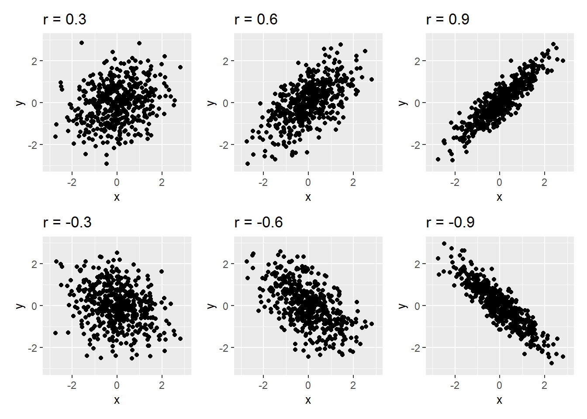
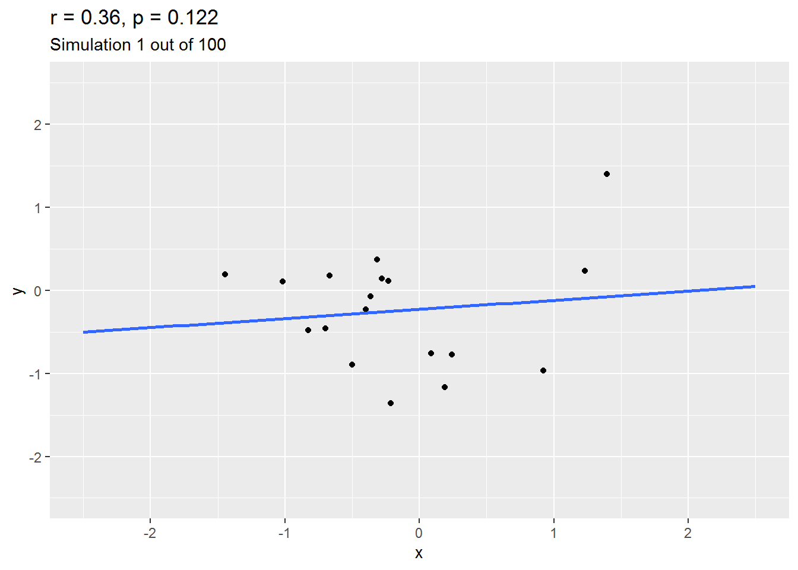
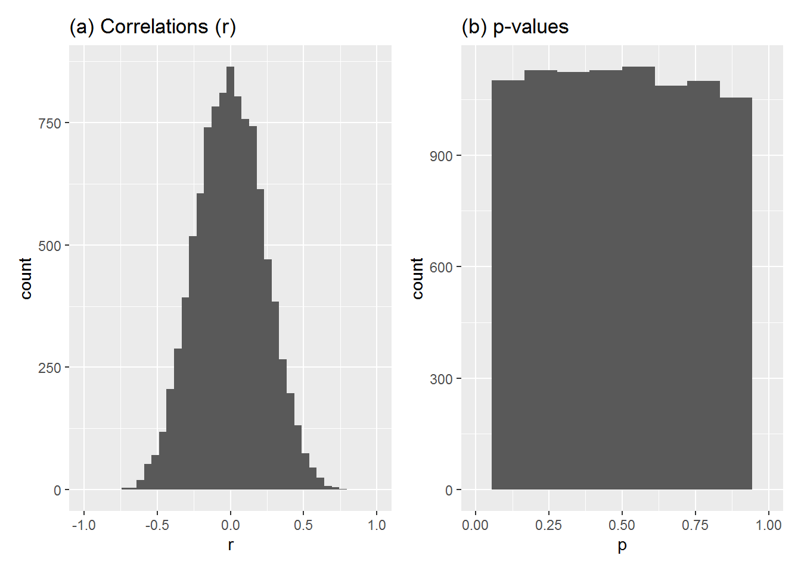
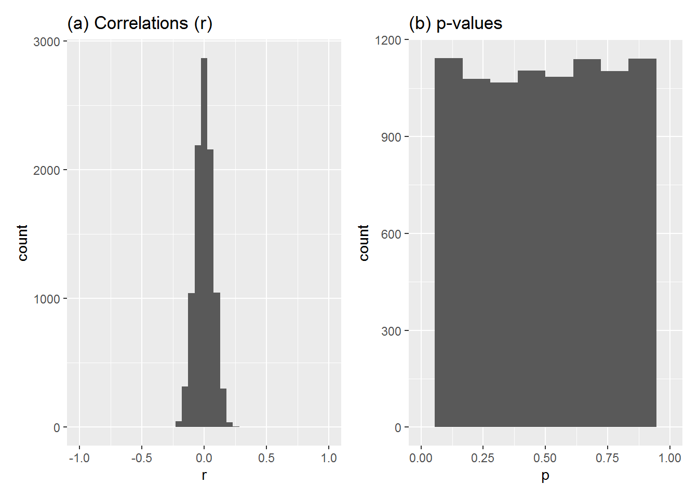
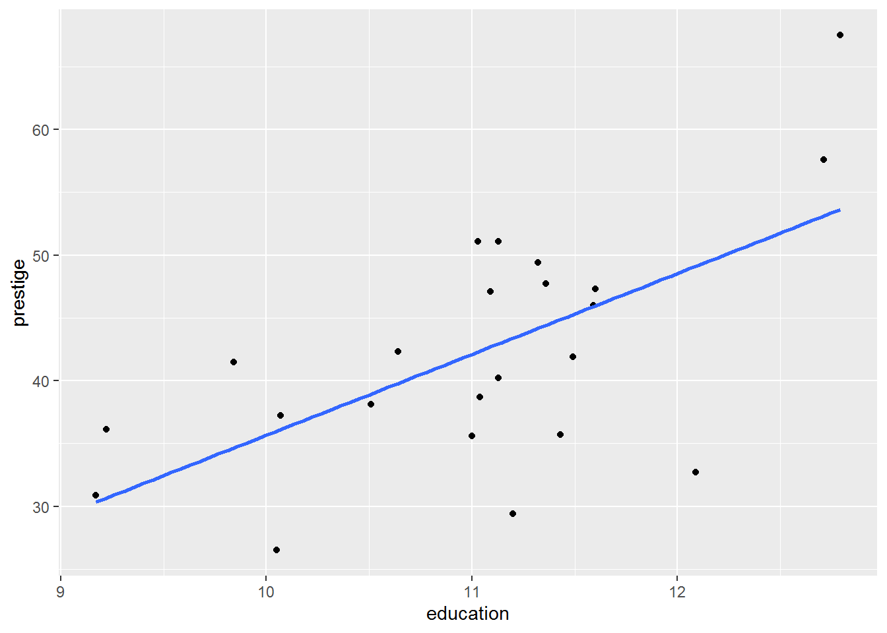
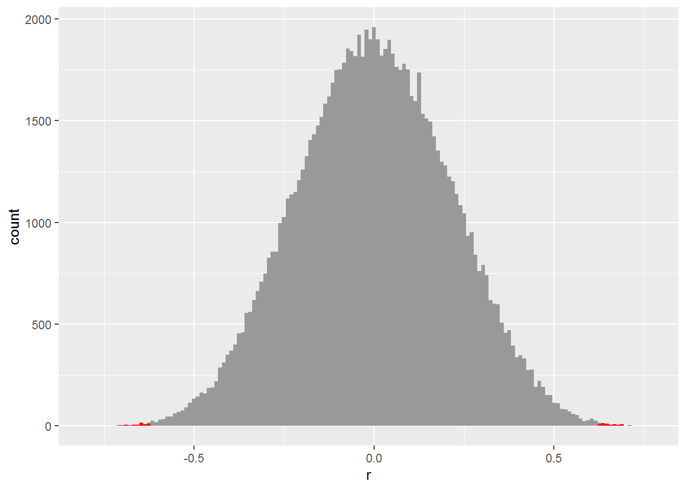
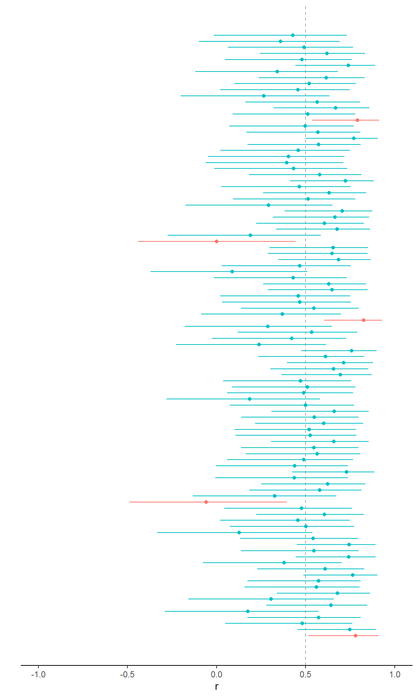

Chapter 4 P-values and confidence intervals
P-values are notoriously difficult to comprehend and controversial. Occasionally journals even try to ban them. But they are pervasive in the literature and statistical software often presents them so it is important to understand what they mean. Confidence intervals, slightly less controversial but similarly often misunderstood, are important too.
By the end of this chapter you will:
- Have an intuitive grasp of how sample data can look, given particular assumptions about true population values.
- Understand p-values in relation to this intuitive grasp.
- Have an intuitive grasp of how confidence intervals look across a range of studies.
- Understand confidence intervals in relation to this intuitive grasp.
- Know where to look for formal definitions.
4.1 Correlation recap
We will focus on correlations in this chapter, so here is a refresher of what they are.
Pearson’s correlation coefficient, \(r\), is an indicator of how linearly correlated two variables are. It is bounded between \(-1\) and \(1\), where \(-1\) denotes a perfect negative correlation (one variable goes up, the other down), \(1\) denotes a perfect positive correlation (one variable goes up, so does the other), and \(0\) denotes a perfect absence of correlation. The picture below shows some examples.

The quantitative interpretation of a correlation, \(r\), is as follows: if one variable is increased by 1 standard deviation (SD), then the other changes by a mean of \(r\) SDs. So, for instance, a correlation of \(-0.42\) indicates if one variable goes up by 1 SD, then the other decreases by a mean of \(0.42\) SDs.
Correlations are a special case of linear regression (see next chapter) but you can also estimate them directly using the R command cor.test or cor.
4.2 Testing null-hypotheses
The basic idea is simple, though feels back-to-front. It’s popular because it is easier to work with than alternatives.
Here’s the gist for testing a correlation.
- Build a model of what the world could look like if there were no true correlation between your variables of interest.
- Calculate the actual correlation in the sample you have.
- Work out how probable the correlation you got, or greater, in either direction would be if there were no true correlation.
The argument is similar to the structure of modus tollens from classical propositional logic.
- If A, then B.
- Not-B.
- Therefore, not-A.
For example:
- If Rex were a duck, then Rex would quack.
- Rex doesn’t quack.
- Therefore, Rex isn’t a duck.
Or:
- If there were no true correlation, then the sample correlation would probably be close to zero.
- The correlation isn’t close to zero.
- Therefore, there probably is a correlation.
Except it’s not quite this, because I have slipped the word “probably” in a couple of times and the two probabilities aren’t the same. Also I haven’t defined “close to zero.”
Onwards, to define “close to zero.”
4.2.1 What can samples look like when the true correlation is 0?
We can explore this by simulation. Here is an animation of 100 simulated studies, each with 20 simulated participants. By design, there is no true correlation between the variables. But let’s see what happens…

As you will have seen, sometimes the correlation is positive, other times, negative, and occasionally it is quite big.
We can run this simulation 10,000 times and draw histograms of the correlation coefficient (r) and the p-value (as calculated by cor.test) for each simulated study. Here is how they look:
10,000 studies (true r = 0, each sample size 20)

Some observations:
- Most values of r are close to zero but some are quite far on either side of it.
- The p-values are uniformly spread from 0 to 1.
Let’s try again, this time with each study sample size set to 200.
10,000 studies (true r = 0, each sample size 200)

- Most values of r are close to zero and now the spread of values is much smaller.
- The p-values are still uniformly spread from 0 to 1.
4.2.2 Understanding actual data in relation to these simulations
Above we explored what correlations can look like in a sample when the true correlation is 0.
We can use this knowledge to understand the p-value of correlations for actual data.
Here is actual data: the subjective prestige of “white collar” occupations is apparently positively correlated with the mean number of years’ education of people with that occupation. (We explore the dataset further in the next chapter.)

There are 23 observations in (this subset of) the data and the correlation is 0.62.
To work out the p-value for this correlation, I’m first going to simulate 100,000 studies in which there is no correlation between the two variables and where each simulated study has 23 observations.

If you look very closely at the histogram, you will see I have shaded the edges (also known as the “tails”) in red. That’s where the simulated \(r\) is above \(0.62\) or below \(-0.62\), i.e., at least as big in magnitude as the sample correlation we got for the prestige data above.
Of these simulations, 71 had a correlation greater than or equal to \(0.62\) and 74 were less than or equal to \(-0.62\). As a proportion of the total number of simulations, that is 0.00145.
The p-value worked out by cor.test command without simulation is 0.0014513.
4.2.3 So, what is a p-value?
The p-value is the probability of getting a statistic in the sample at least as big as the one you got, if the null hypothesis and assumptions about how the data were created were true.
In the example above, we are testing for the absolute value of the correlation (i.e., ignoring its sign) under the null hypothesis that the true correlation is zero and making assumptions such as the data being a simple random sample.
Note how p-value is not probability of the null hypothesis. We have assumed, for the sake of argument, that the null hypothesis is true. Under this assumption, the probability of the null hypothesis is 1. And herein lies everyone’s beef with p-values – they tell you the probability of your data given the null but not the probability of the null given the data.
4.3 Confidence intervals
We can also calculate confidence intervals for correlations and a range of other statistics we will encounter.
4.3.1 Simulating confidence
Suppose the true correlation between two variables were 0.5 and you ran 100 studies, each with 20 participants, sampling randomly from the population. Let’s do it by simulation…
Below shows the results for each study. The true value is shown as the vertical dashed line. Each horizontal line gives the confidence interval for a particular study and the blob gives the correlation coefficient. The colour depends on whether the interval includes the true value.

If you count them, you will see that 95 included the true value, i.e., 95% of the studies had an interval including the true value. I should add that it doesn’t always work out as exactly 95% for a given collection of studies, simulated or real, but it will approach this percentage if the model is correct as the number of studies increases.
4.3.2 What is a confidence interval, then?
If you run loads of studies with random samples from the same population, then the \(c\%\) confidence interval will include the true value for the statistic in around \(c\%\) of studies, assuming that you are using the correct model.
This is not the same as saying that, for a particular study, there is a 95% probability that it includes the true value.
4.4 Further reading
Try Greenland et al. (2016) who have a long list of misconceptions to try to avoid. I also liked Colquhoun’s (2014) explanation of p-values by analogy with the properties of diagnostic tests.